Переход на новую памяти¶
Определения типа Эмунанда¶
Для начала нам надо определить какой у вас тип Эмунанда. Сделать это можно, используя Hekate.
- Выключите вашу консоль и зайдите в hekate(кнопка уменьшения громкости при включении консоли, если консоль с чипом)

- Перейдите во вкладку emuMMC 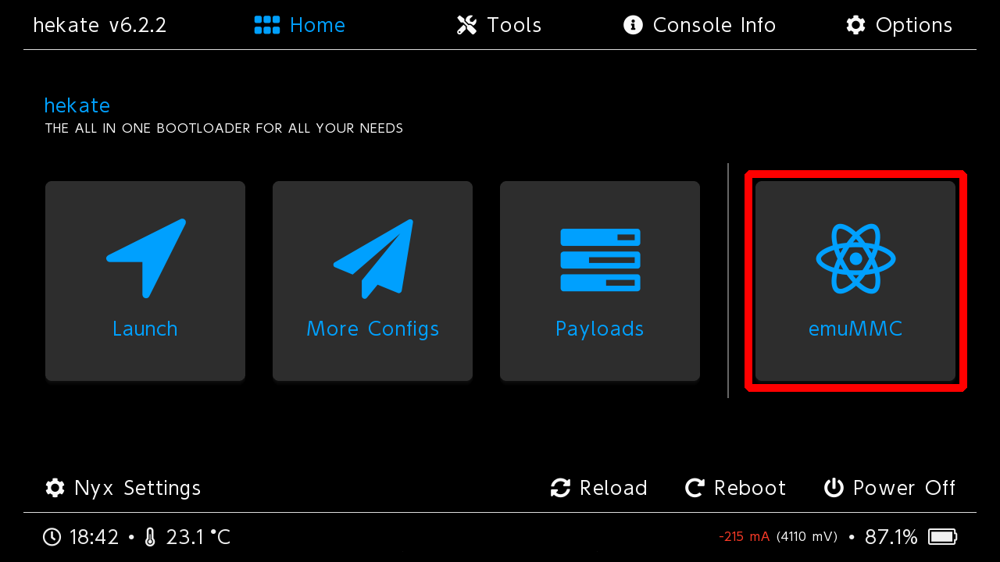
- Обратите внимание на строчку
Type:
Так выглядит файловый Эмунанд 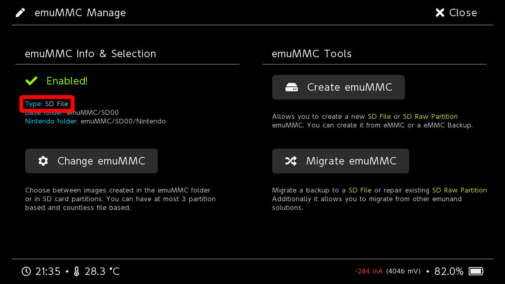
Так выглядит Эмунанд на разделе 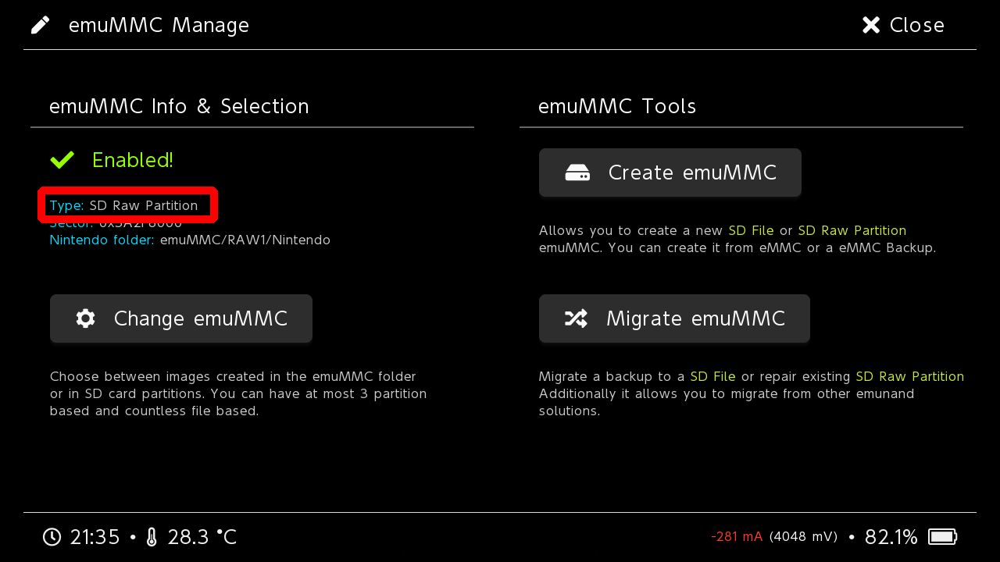
Так выглядит отсутствие Эмунанда 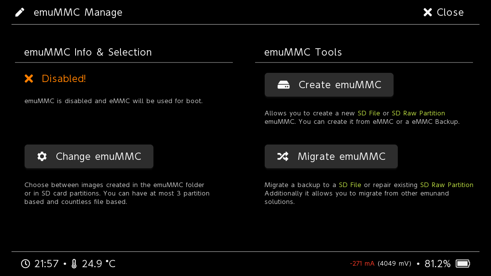
Эмунанд
У вас отсутствует Эмунанд. Настоятель рекомендуется сделать очистку системы от следов неофициально установленных приложений и создать Эмунанд.
Переход на другую SD карту¶
- Скачайте программу Rufus
- Вставьте новую карту памяти в картридер и подключите его в ПК
- Откройте Rufus и установите настройки для форматирования SD карты, как на скриншоте 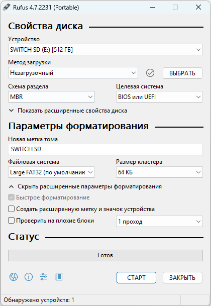
- Нажмите на кнопку Старт
- Скопируйте всё содержимое прошлой карты памяти на новую
- Безопасно извлеките карту памяти
- Войдите в Hekate(кнопка уменьшения громкости при включении консоли, если консоль с чипом) 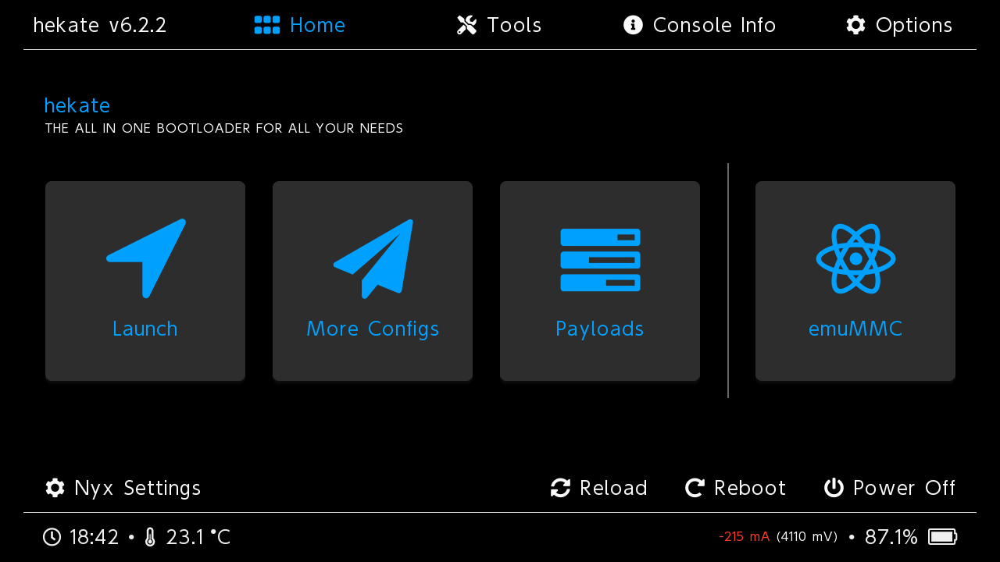
- Перейдите в раздел Tools 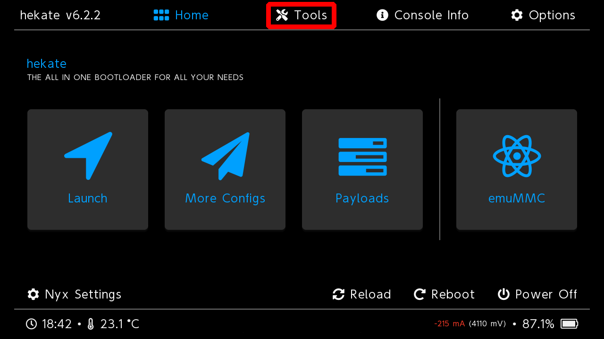
- Перейдите в Backup eMMC 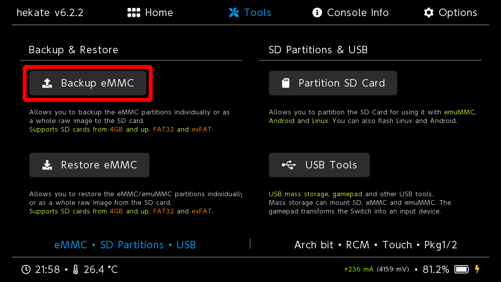
- Переключите SD emuMMC RAW Partition на ON 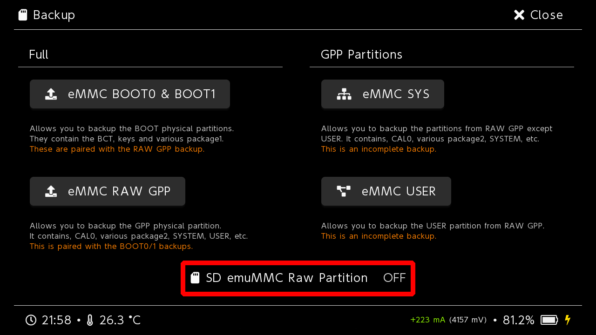
- Сделайте бэкап Эмунанда выбрав по порядку SD emuMMC BOOT0 & BOOT1 и SD emuMMC RAW GPP 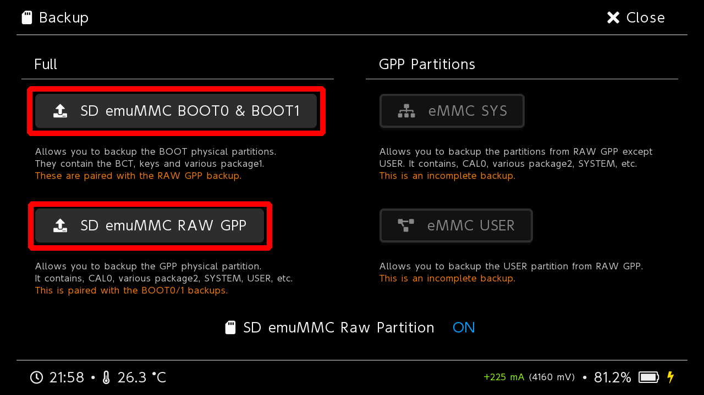
- Скачайте Ultra-NX
- Распакуйте архив на новую карту памяти. Карта памяти должна выглядеть так. 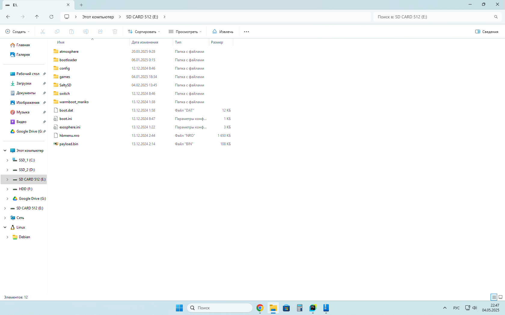
- Безопасно извлеките карту памяти
- Извлеките старую карту памяти из консоли и вставьте новую. Выключать консоль для этого не обязательно — в Hekate предусмотрена функция безопасного извлечения карты памяти. Если вы вышли из Hekate, то войдите в неё снова.
- Перейдите в раздел Tools
- Перейдите в Partition SD Card 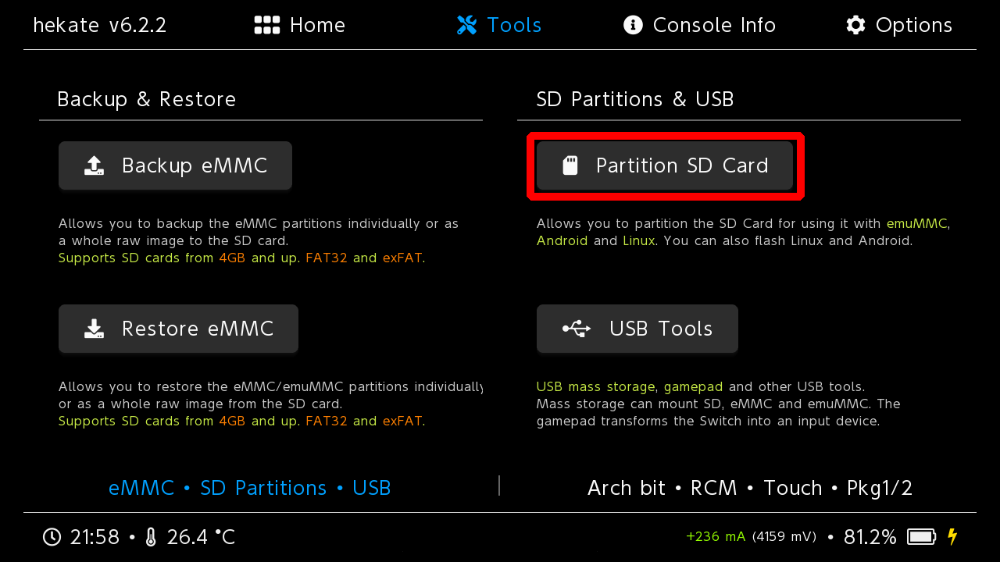
- Нажмите OK 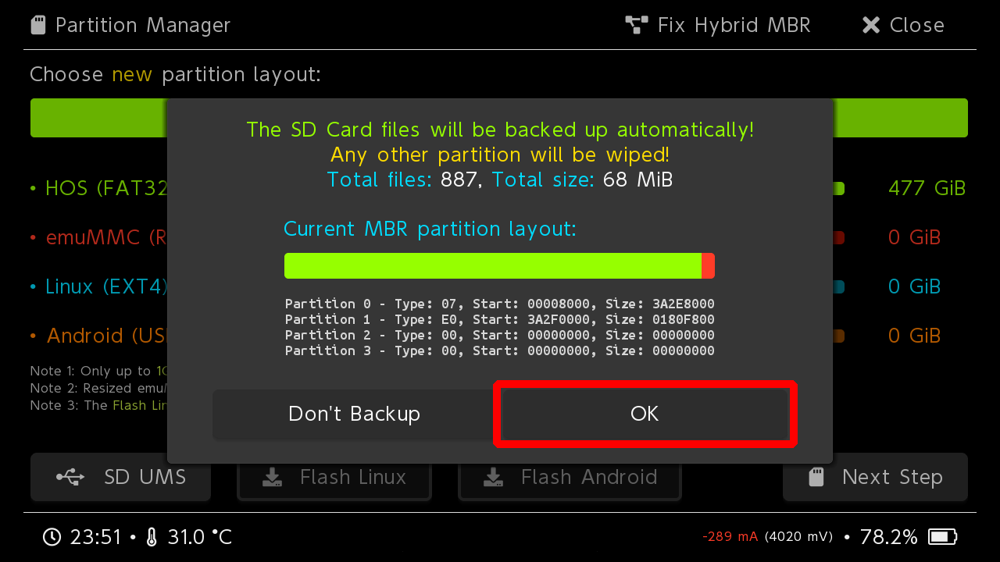
- Потяните ползунок emuMMC (RAW) выбрав размер раздела под Эмунанд, как на прошлой карте памяти
- Нажмите Next Step и согласитесь на создание раздела под Эмунанд 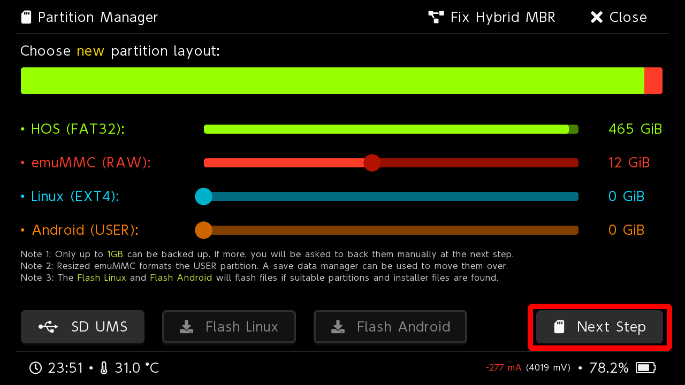
- После завершения создания раздела для Эмунанд извлеките новую карту памяти из консоли
- Удалите всё с новой карты памяти, после этого перенесите на неё всё со старой
- На новой карте перейдите в папку
backup/NAND_ID/emummcпереместите все файлы из этой папки вbackup/NAND_ID/restore/emummc - Вставьте новую карту памяти в консоль
- Перейдите в раздел Tools
- Перейдите в Restore eMMC 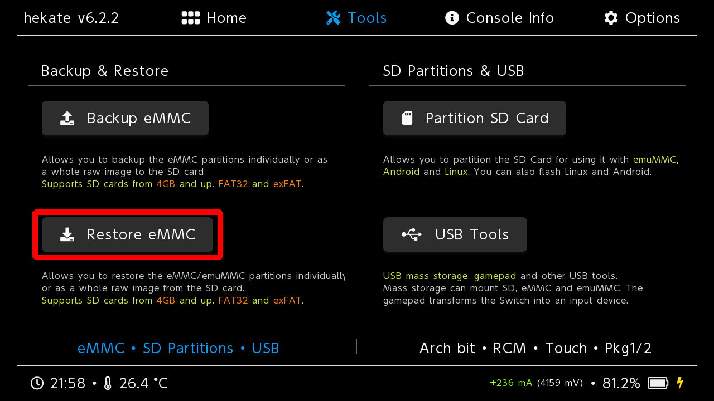
- Переключите SD emuMMC RAW Partition на ON 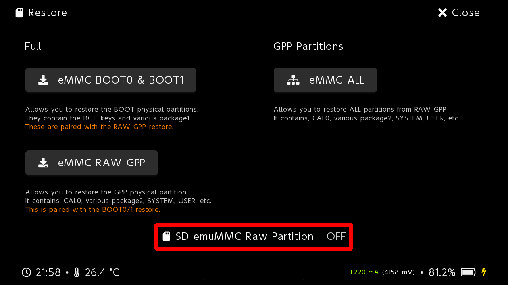
- Восстановите бэкап Эмунанда выбрав по порядку SD emuMMC BOOT0 & BOOT1 и SD emuMMC RAW GPP 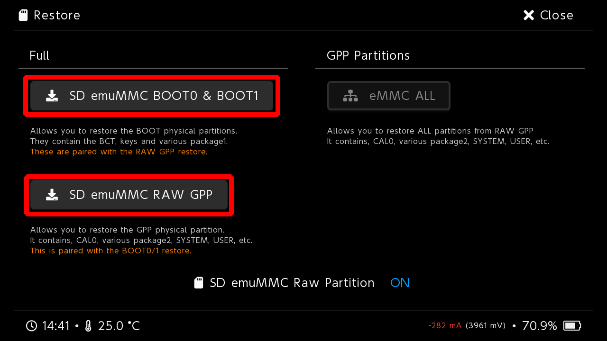
Папка бэкапа Эмунанда
После восстановления бэкапа Эмунанда, вы можете удалить папку backup с новой карты памяти, чтобы она не занимала место
Эмунанд
У вас отсутствует Эмунанд. Настоятель рекомендуется сделать очистку системы от следов неофициально установленных приложений и создать Эмунанд.
- Скачайте программу Rufus
- Вставьте новую карту памяти в картридер и подключите его в ПК
- Откройте Rufus и установите настройки для форматирования SD карты, как на скриншоте
- Нажмите на кнопку Старт
- Скопируйте всё содержимое прошлой карты памяти на новую
- Безопасно извлеките карту памяти
Обновление системы
После перехода на новую карту рекомендуется обновить систему.